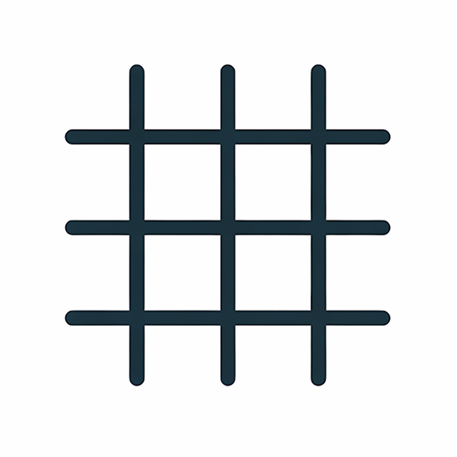
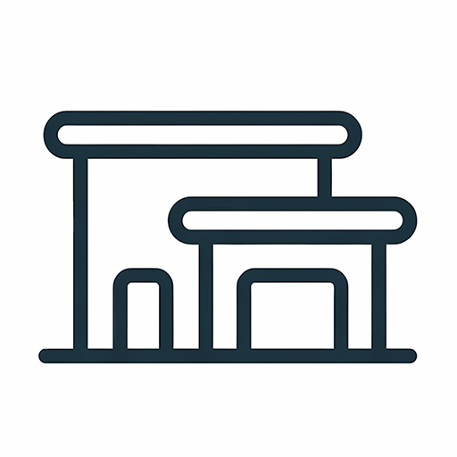
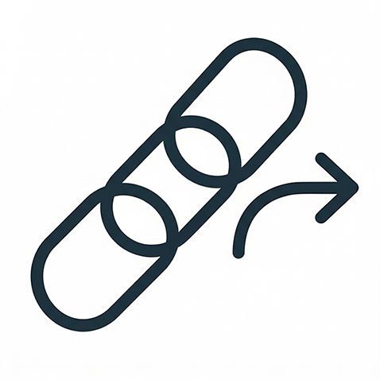
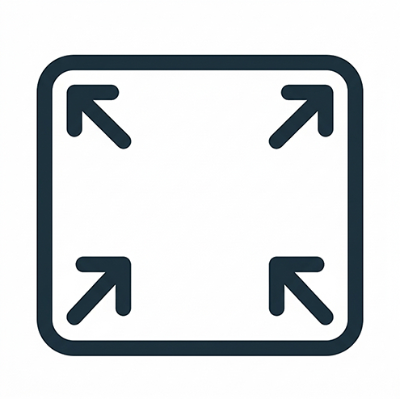

ValeVision 3D
Loading ValeVision3D...
Loading Scene...
Initializing...
Rendering Your Image...
Tools & Settings
▾
Camera Settings
▾
Camera Focal Length
50 mm
Perspective Correction
Export Image
▾
Custom Export
Aspect Ratio
3:2
Resolution
2k
Enhance Whitecard
Create Drawing
Download Image

Grid Lines
▾
Show Grid
Grid Size
1000 mm
Grid Height
0 mm
Grid Style
▾
Line Width
1.00 px
Line Opacity
50%
Gap Size
1.0x
Line Type & Colour
▾
Line Type
Solid
Dashed
Dotted
Line Colour
Grid Position (Dev)
Offset X
mm
Offset Z
mm
Save Position
Toggle Model Layers
▾
Model Parts List

Elevation View
▾
Select Elevation Face
View Elevation
Back to 3D
Toggle Elevation Plane
Reselect Elevation Plane

Share project link
▾

Enter Full Screen
▾
Dev Tools
▾
Save Camera Settings
Profile Lines
ON
Fog Effect
▾
Enable Fog
Show Planes
Fall-off Distance
1 m
Place Fog Plane A
Place Fog Plane B
Remove Plane A
Remove Plane B
Save Fog Settings
Scene Inspector
▾
Press Scan to analyse scene.
Hide All
Restore All
Isolate Pair
Copy Tree
Scan Scene